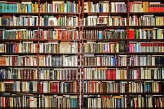

Коротка інформація
«Гаррі Поттер і філософський камінь» — це фантастичний роман, який відкриває читачеві чарівний світ. Головний герой дізнається, що він не звичайний хлопчик, а чарівник. Його життя змінюється після вступу до школи магії Гоґвортс.
| Назва | Гаррі Поттер і філософський камінь |
|---|---|
| Автор | Джоан Роулінг |
| Жанр | Фентезі, пригодницький роман |
| Рік видання | 1997 |
| Країна | Велика Британія |
| Мова оригіналу | Англійська |
Основна ідея
Основними темами книги є дружба, сміливість, вибір між добром і злом, а також пошук свого місця у світі. Гаррі проходить шлях від самотнього хлопчика до учня школи магії, який знаходить друзів і починає розуміти своє минуле.
Довідкову інформацію про книгу можна знайти тут: стаття про книгу .
